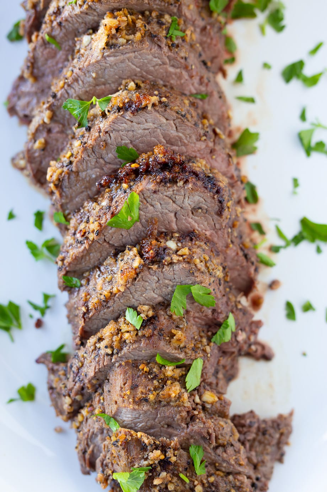
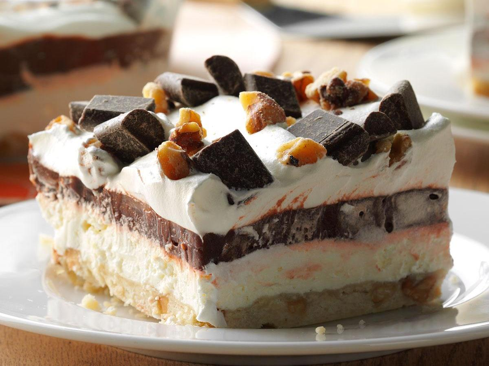
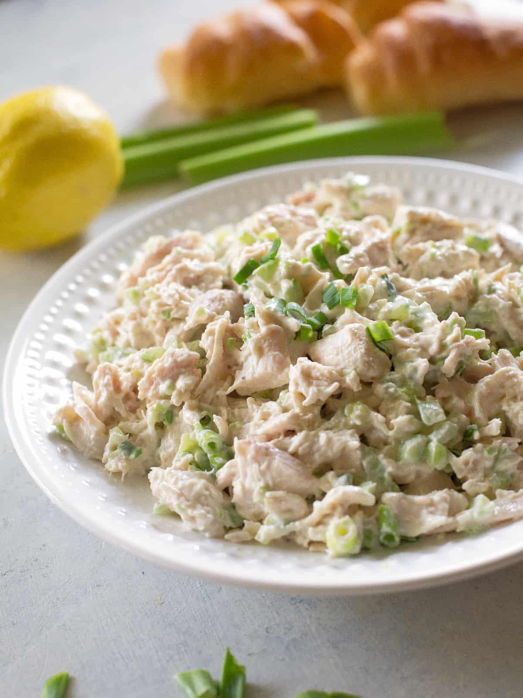

| Menu | Staff | About Us | Contact information |
|---|

Roasted Beef Tenderloin
This Roasted Beef Tenderloin is so delicious and actually so easy to make. You just need a few tools to make this successfully. Make sure to read all the way through the post for the details so you don’t miss an important step. I usually save this recipe for special occasions or the holidays but every now and then I will make it because it’s so good! The tenderloin is the most tender cut of beef. This cut of meat is the filet mignon cut when grilling it as a steak. The tenderloin isn’t super flavorful so the garlic crust gives it a nice flavor.

Easy Four-Layer Chocolate Dessert
This dessert is definitely initially underestimated. When you think pecan shortbread with a cream cheese layer, then a pudding layer, then whipped cream…hmmm…sounds okay, nothing spectacular. But then every time I have had this I take a little square for myself and when I go back to get more…NOTHING LEFT! I seriously could eat the whole pan. The crust is the best part.

Chiken Salad
Chicken, celery, mayonnaise, green onions, and a little lemon juice make this salad taste like heaven. Feel free to add in whatever you want but this is great just as it is! You can eat this as a sandwich or for a low-carb and make a Keto chicken salad by eating it in lettuce wraps or by itself.